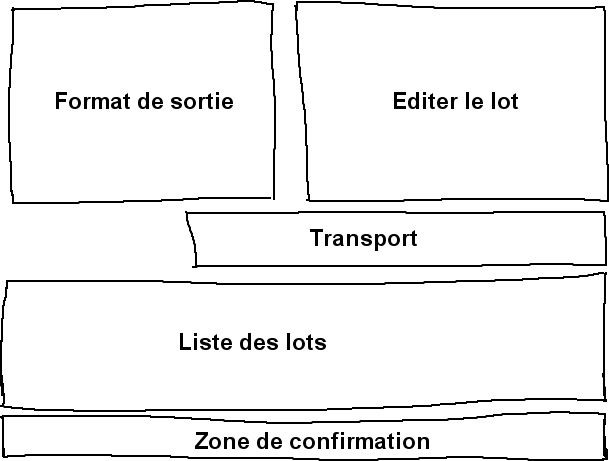

bouton d'enregistrement.
bouton d'enregistrement.
| [ << ] | [ >> ] | [Top] | [Table des matières] | [Index] | [ ? ] |
Idéalement, tous les médias sont enregistrés sur disque-dur, CD-ROM, flash ou DVD et le chargement dans Cinelerra ne consiste qu'à charger un fichier. En réalité, il n'y a que très peu de sources de médias qui puissent être accédées comme un système de fichiers ; ils utilisent plutôt des mécanismes de transport et des mécanismes d'E/S basiques pour transférer les données vers les ordinateurs. Ces types de média sont importés dans Cinelerra par l'intermédiaire du dialogue d'enregistrement.
La première étape lors de l'enregistrement est de configurer le périphérique d'entrée. Dans Configuration->Préférence se trouvent de nombreux paramètres d'enregistrement décrits dans la configuration Voir la section Acquisition. Ces paramètres s'appliquent à l'enregistrement quelque soient les paramètres du projet, car les paramètres d'enregistrement utilisent habituellement les pleines capacités du matériel d'enregistrement alors que les paramètres du projet peuvent varier.
Allez dans le menu Fichier->Enregistrer pour effectuer l'enregistrement depuis une source externe. Un format de sortie vous sera demandé comme pour le rendu. Ensuite, la fenêtre d'enregistrement et le moniteur d'enregistrement vont s'afficher.
La fenêtre d'enregistrement comporte un certain nombre de sections. Alors que de nombreux paramètres changent selon que le fichier contienne de l'audio ou de la vidéo, les sections elles-mêmes restent toujours les mêmes.

Zones de la fenêtre d'enregistrement
L'enregistrement dans Cinelerra est organisé par lots. Un lot définit
essentiellement un fichier de sortie distinct pour l'enregistrement. Pour
l'instant, vous pouvez ignorer complètement le concept de lot et effectuer
l'enregistrement simplement en cliquant le
bouton d'enregistrement.
Le bouton d'enregistrement ouvre le fichier de sortie en cours s'il n'est pas
déjà ouvert et y écrit les données capturées. Le bouton arrêt permet d'arrêter
l'enregistrement. L'enregistrement peut être repris à ce point avec le bouton
d'enregistrement, sans effacer le fichier. Dans le cas d'un fichier vidéo, il
y a un bouton d'enregistrement d'une seule image
 qui permet de n'enregistrer qu'une seule
image.
qui permet de n'enregistrer qu'une seule
image.
Lorsque vous avez enregistré suffisamment de données, choisissez la méthode d'insertion dans le menu stratégie d'insertion et cliquez sur le bouton de fermeture.
Nous arrivons maintenant au concept de lots. Les lots permettent d'essayer de rendre le comportement d'entrées/sorties simples plus proche de celui d'un système de fichiers. Les lots sont traditionnellement utilisés pour diviser une bande en différents programmes et enregistrer différents programmes sous forme de fichiers séparés plutôt que d'enregistrer la bande sous la forme d'un fichier d'un seul tenant. En raison du coût élevé de développement d'un mécanisme de contrôle de banc de montage précis à l'image près, la seule utilisation actuelle des lots est l'enregistrement de différents programmes à différentes heures de la journée. C'est aussi utile pour enregistrer des émissions de télévision ou des films en différé comme le savent bien tous ceux qui n'ont pas les moyens d'acquérir les appareils adéquats.
La fenêtre d'enregistrement gère une liste de lots et deux modes d'enregistrement : le mode interactif et le mode par lots. Le mode interactif est utilisé lorsque le bouton d'enregistrement est pressé. L'enregistrement interactif démarre immédiatement et utilise le lot en cours pour tout déterminer sauf l'instant de départ. Par défaut, le lot en cours est configuré pour se comporter comme une bande magnétique.
L'enregistrement par lots se produit lorsque le bouton Démarrer est pressé. Dans l'enregistrement par lots, l'instant de départ est le moment où le lot commence à s'enregistrer.
Il vous faudra d'abord créer un certain nombre de lots. A chaque lot s'appliquent certains paramètres et certaines méthodes d'ajustement.
La fenêtre d'enregistrement comporte la notion de lot en cours. Le lot en cours n'est pas le même que le lot en surbrillance dans la liste des lots. Le lot en cours est de couleur rouge dans la liste des lots. Le lot en surbrillance est simplement affiché dans la section d'édition du lot pour pouvoir être édité.
En mettant en rouge le lot en cours, chaque lot peut être édité en le mettant en surbrillance, sans pour autant modifier le lot qui doit être enregistré.
Toutes les opérations d'enregistrement sont effectuées dans le lot en cours. S'il y a plusieurs lots, mettez le lot désiré en surbrillance et cliquez Activer afin qu'il devienne le lot en cours. Si le bouton Démarrer est pressé, le lot en cours clignote pour indiquer qu'il est en attente de l'instant de départ en mode de traitement par lots. Si le bouton Enregistrer est pressé, le lot en cours est enregistré immédiatement en mode interactif.
Dans les modes d'enregistrement par lot ou interactif, lorsque le lot en cours se termine, le lot suivant est activé et exécuté. Tous les enregistrements suivants sont effectués en mode de traitement par lots. Lorsque le premier lot se termine, le lot suivant clignote jusqu'à ce que l'instant de départ soit atteint.
Le bouton Arrêter permet d'arrêter le lot ou l'opération interactive en cours.
Enfin, il y a le bouton  de retour arrière.
Dans les modes d'enregistrement par lots ou interactif, le bouton de retour
arrière permet de fermer le fichier du lot en cours. L'opération
d'enregistrement suivante du lot en cours effacera le fichier.
de retour arrière.
Dans les modes d'enregistrement par lots ou interactif, le bouton de retour
arrière permet de fermer le fichier du lot en cours. L'opération
d'enregistrement suivante du lot en cours effacera le fichier.
Vous aurez parfois besoin, dans le processus d'enregistrement et dans le processus de configuration, de définir et de sélectionner des canaux du tuner soit pour l'enregistrement, soit pour la lecture. Dans le cas de l'enregistrement avec les pilotes d'enregistrement Video4Linux et Buz, les canaux du tuner définissent la source. Lorsque le pilote Buz est aussi utilisé pour la lecture, les canaux du tuner définissent la destination.
La définition des canaux du tuner est obtenue en pressant le bouton de canal
 . Ceci permet d'afficher la fenêtre d'édition
des canaux. Dans cette fenêtre, vous pouvez ajouter, modifier et classer les
canaux. Avec certains pilotes vidéo, vous pouvez aussi ajuster la qualité de
l'image.
. Ceci permet d'afficher la fenêtre d'édition
des canaux. Dans cette fenêtre, vous pouvez ajouter, modifier et classer les
canaux. Avec certains pilotes vidéo, vous pouvez aussi ajuster la qualité de
l'image.
L'opération d'ajout provoque l'affichage d'une boîte d'édition du canal. Le titre du canal apparaît dans la liste des canaux. La source du canal est l'entrée physique dans la table de fréquences du tuner correspondant au titre.
L'ajustement fin dans le dialogue d'édition ajuste légèrement la fréquence si le pilote le gère. La norme et la table de fréquences définissent ensemble la table de fréquences qui sera choisie pour définir les sources. Si le périphérique peut gérer plusieurs entrées, le menu d'entrée permet de la sélectionner.
Pour trier les canaux, mettez le canal en surbrillance et pressez déplacer vers le haut ou déplacer vers le bas afin de le déplacer.
Une fois les canaux définis, l'entrée source dans la fenêtre d'enregistrement peut être utilisée pour choisir les canaux vers lesquels sera effectué l'enregistrement. Une possibilité identique existe aussi dans la fenêtre d'enregistrement. Notez que les sélections de canaux dans la fenêtre d'enregistrement et dans la fenêtre du moniteur sont enregistrées dans le lot en cours.
Avec certains pilotes, une option permettant de permuter les champs est affichée. Ces pilotes ne permettent pas d'avoir les champs dans le bon ordre sans une intervention humaine. Cochez cette option pour avoir les lignes paires et impaires enregistrées dans l'ordre correct.
Dvgrab est un très bon outil en ligne de commande simple à utiliser pour faire de l'acquisition vidéo depuis un caméscope DV. Lorsqu'il est appelé, il va automatiquement mettre votre caméscope en mode lecture, et commencer à enregistrer les vidéo sur votre disque dur. Les fichiers vidéos seront numérotés séquentiellement comme ceci : `001.avi', `002.avi' et ainsi de suite.
Pour installer dvgrab, utilisez le mécanisme d'installation de votre distribution préférée (apt, rpm, deb, etc.) ou référez-vous à la page Web de dvgrab.
Faire l'acquisition vidéo en quatre étapes simples :
cd dans ce répertoire
dvgrab --buffers 500 et Entrée
L'option `--autosplit' est très utile. Elle découpe les scènes en fonction du code temporel. Cependant, ceci ne fonctionne que lors de l'acquisition depuis un caméscope DV. Ceci ne fonctionnera pas depuis un convertisseur analogique/numérique tel qu'un Canopus ADVC110.
Lisez le manuel de dvgrab afin d'obtenir davantage d'informations concernant ses fonctionnalités.
| [ << ] | [ >> ] | [Top] | [Table des matières] | [Index] | [ ? ] |
This document was generated on le 11 Février 2016 using texi2html 1.76.